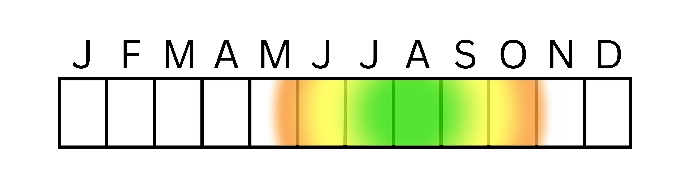

Melissodes

Scientific Classification
Kingdom
Phylum
Class
Order
Family
Tribe
Genus
Animalia
Arthropoda
Insecta
Hymenoptera
Apidae
Eucerini
Melissodes
The genus Melissodes Latreille is a common group of New World long-horned bees in the tribe Eucerini (Apinae). The antenna of the males often appear to be quite long in comparison to their body lengths, giving them the name "long-horned bees". Characteristcs of the two sexes commonly differ in appearance, especially in antenna length and scopal hair density (LaBerge, 1956). Melissodes is the second largest genus in the Eucerini tribe with 129 described bees and 5 current subgenera. The majority of the bees live in the United States and Mexico, except for all species of M. (Ecplectica), which are native to South America (Wright, 2016). Melissodes bees are shown to have some importance in agricultural pollination, pollinating crops such as cotton (LaBerge, 1956), alfalfa (LaBerge, 1956), muskmelons (Winfree, et al., 2007), watermelon (Campbell et al., 2018; Winfree, et al., 2007), conola (O'Brien & Arathi, 2018), and coffee (Ngo et al., 2013). Given the genus has so many species and is prevalent, it is reasonable to assume that they play an important role pollinating many other plants in nature as well.
Description and identification
Melissodes are medium-sized, setaceous bees with males often having long antennae where the first flagellar segment is short in comparison to the rest of the antennal segments (Laberge, 1956). Both sexes differ from Svastra in lacking spatuloplumose hairs on the basal pubescent band of the second tergum (T2). Males and females also subtly differ from other Eucerini genera in tegular shape, with the exception of Martinapis. To see the difference, removal of setae is often necessary. Male Melissodes differ from those in Svastra as a result of the presence of a denticle on either side of the pygidial plate located beneath the strong lateral arm of the gradulus of the 7th dorsal segment (Mitchener, 2007). Common characteristics in the majority of Melissodes species are as follows: short or absent malar margins of both sexes, the propodeum of both sexes has a distinct dorsal face that never slopes downward, and the scopal hairs of females have at least one or two branches on either side, excluding one species in Apomelissodes (Laberge, 1956).
Sexual dimorphism
Melissodes species provide a clear example of sexual dimorphism. The males have antennae that often surpass their body length, whereas females have substantially shorter antennae. For most bee species, males have 13 antennal segments and females have 12 (Mitchener, 2007), this includes Melissodes as shown in Figure 1. Given research on other bees within the same family, the additional segment on Melissodes males is most likely an evolutionary adaptation that allows space for more chemosensory structures, aiding them in locating mates (Ren et al., 2023; Streinzer et al., 2013). Female Melissodes have long and dense multi-branched scopal hairs on both hind tibia, which are absent in males (Fig. 2). This is an example of sex-specific morphological adaptation based on the differing roles of the sexes. Females forage to provision their nests with pollen allowing for larval development, while males only forage to fuel themselves and find mates (Larson et al., 2021). This reflects both sexes' morphological traits. Males wouldn’t have co-evolved with plants and needed thick scopal hairs for pollination, and females wouldn’t need long antennae to find mates.

Fig. 1 Diagram showing the sexual dimorphism in antenna length for Melissodes. Each species will differ in antennal lengths, however, the antennal structures illustrated are similar among all species.

Fig. 2 Diagram showing the sexual dimorphism in scopal hair density for Melissodes
Taxonomy and Phylogeny
The genus Melissodes was proposed in 1829 by the French Zoologist and entomologist Latreille to be included in the American Eucernie bees. This was because Melissodes have four segments in their maxillary palpi and three submarginal cells (Fig. 3). However, Latreille did not include any species in the genus, and was therefore not valid (Laberge, 1956). In 1841, Romand described the first species in this genus as M. fonscolombei; the female was located in Chile, and the male was located in the West Indies. This was subsequently overturned and updated by the Secretary of the International Commission on Zoological Nomenclature, and M. fonscolombei was deemed to be a nomen dubium. The first valid entry into the Melissodes genus was Melissodes leprieuri in 1849 by a French entomologist named Charles Émile Blanchard, thus creating validity for the genus (Laberge, 1956).

Fig. 3 Wings of a Melissodes (cells shown by capital letters). Cells: A, anal; D, discoidal: MC, marginal; MD, median; SM, submarginal; SMD, submedian.
Subgenera
In 1956, Laberge showed the relationships among 10 subgenera, split into two groups with a diagram as shown in Figure 4 (Laberge, 1956; Wright et al., 2020). He hypothesized that Melissodes s.s. and M. (Eumelissodes) Laberge were derived from M. (Ecplectica) Holmberge, the only South American subgenus of group two. Laberge also postulated that M. (Apomelissodes) Laberge, M. (Tachymelissodes) Laberge, M. (Heliomelissodes) Laberge and M. (Psilomelissodes) Laberge were subsequently derived from M. (Eumelissodes) Laberge. In part three (1961), Laberge omitted the entirety of group one from Melissodes, opting for M. (Epimelissodes) Laberge to become its own genus, with M. (Brachymelissodes) Laberge and M. (Idiomelissodes) Laberge to be its subgenera. He then added the subgenus M. (Callimelissodes) and hypothesized new phylogenetic relationships among the subgenera based on 19 morphological traits that were characterized based on “primitiveness” vs. “specialization” (Laberge, 1956; Wright et al., 2020). His research reflected that Melissodes s.s. was specialized in more characteristics, and was at least as primitive as M. (Eumelissodes) Laberge. However, Melissodes s.s. was shown to have a certain specialization in the male terminalia which would be more reasonably derived from that of M. (Ecplectica) Holmberge than that of Melissodes s.s. The same characteristic in M. (Eumelissodes) Laberge would also be more reasonably derived from M. (Ecplectica) Holmberge than Melissodes s.s. (Laberge, 1961). In addition, M. (Ecplectica) Holmberge and Melissodes s.s. share a defining specialized characteristic of the propodeum of female being shorter or no longer than metanotum medially, which the others lack. The rest of the subgenera share the specialized characteristic of all the lateral parts of gradulus being absent or cariniform which in turn lacks in the previous two. This goes to show that there is a high likelihood for each of the subgenera to have derived from an Ecplectica-like ancestor (Laberge, 1961). However, newer phylogenetic research shows a differing assessment. Wright et al. (2020), showed that M. (Tachymelissodes), M. (Psilomelissodes), M. (Apomelissodes), and M. paucipuncta seem to form a basal clade. Interestingly, these subgenera and M. paucipuncta, are now recognized under the subgenus M. (Apomelissodes), implying that the remaining subgenera may have derived from an Apomelissodes-like ancestor instead of an Ecplectica-like one. (Wright et al., 2020)

Figure. 4. Diagram representing the phylogenetic relationship between Melissodes subgenera taken from Laberge (1956). Originally presented as “FIG. 1. Diagrammatic representation of the relationships of the subgenera of Melissodes Latreille. The area of each circle indicates the approximate number of species in each subgenus, Psilomelissodes being unity. The distances between the perimeters of adjacent circles represent degree of relationship. The subgenera Epimelissodes, Idiomelissodes and Brachymelissodes form a distinct group and are not closely related to any one of the remaining subgenera.”
In 2023, a taxonomic revision of the taxa in the Eucerini tribe was proposed, including Melissodes and its subgenera (Freitas et al., 2023). This study presented the new subtribe Melissodina where Melissodes would reside. Another substantial overhaul included in this paper was the re-organization of the previously stated subgenera in the genus Melissodes. The re-classification goes as follows: M. (Heliomelissodes) Laberge was absorbed into M. (Eumelissodes) Laberge, and M. (Psilomelissodes) Laberge plus M. (Tachymelissodes) Laberge were absorbed into M. (Apomelissodes) Laberge. However, M. (Apomelissodes) Laberge was also redefined to include not only its original species and M. (Psilomelissodes) plus M. (Tachymelissodes) Laberge, but also M. paucipunct, which was previously included in M. (Eumelissodes) Laberge (Freitas et al., 2023). These updates were validated by the Secretary of the International Commission on Zoological Nomenclature.
Location and Habitat
Melissodes as a genus currently resides in the New World and each subgenera ranges vastly in the within this region. The type subgenus Melissodes s.s. has 24 species and was found to be Nearctic and Neotropical (Freitas et al., 2023). Melissodes s.s. ranges mostly from North America to South America, including Mexico and Central America, with only 5 representatives that reach further north or east. Six species of Melissodes s.s. have been documented in the Antillean Islands, one of which also occurs in the mainland of South America that crosses over into the northern parts of Brazil. The other South American subgenus, M. (Ecplectica) Holmberge, has a total of ten described species, with only five in South America. Three species of M. (Ecplectica) Holmberge, have been documented in the Antillean Islands, and one species ranges from Panama to northern Mexico. The tenth species has no current locality records. M. (Apomelissodes) Laberge includes 10 species, all are Nearctic (Freitas et al., 2023). Four of its species have been documented in the southwestern parts of North America, and one of its species has been seen more widespread throughout parts of the western United States, ranging upwards toward Washington. Five species of M. (Apomelissodes) Laberge appear in the eastern United States, with two documented as far west as Texas (Wright et al., 2020). M. (Callimelissodes) Laberge has a total of 14 species, with most living in the western parts of the United States. Four species of M. (Callimelissodes) Laberge reside east of the Mississippi, with two of these dipping down into Northern Mexico. The other ten species are widespread throughout the western United States, with seven of them being in close proximity to California. Finally, the largest subgenus M. (Eumelissodes) Laberge, has 72 described species and is both a Nearctic and Neotropical subgenus (Freitas et al., 2023). M. (Eumelissodes) Laberge species range from British Columbia to Panama. The densest accumulation of M. (Eumelissodes) Laberge is in the western United States and Mexico. It’s estimated that one third of the species occurs further east, and about one fifth ranges north toward Canada. Two species have occurred as far south as Central America, and one has been documented in Cuba (Wright et al., 2020).
Figure. 5 A conceptually similar arrangement to that illustrated by Wilson & Carril, 2016 but was independently redrawn for this study with updated information. Green represents the most active time period; yellow represents active time for some bees; orange represents active time for very few species.
Bionomics
Melissodes are a genus of ground nesting solitary bees (Parker, F. D et al., 1981; Clement, 1973; Cameron et al., 1996; Laberge, 1956b; Scullen, 1926) that are mostly oligolectes of the family Asteracea, with a few exceptions (Laberge, 1956a; 1956b; 1961). On first emergence of the year, Melissodes have full and unworn setae and wing margins, which suggests one generation per year (Parker, F. D. et al., 1981). Furthermore, Melissodes seem to have somewhat of a rapid growth rate, with one account documenting eggs on the second of July, then returning 19 days later to find full grown larvae (Scullen, 1926). Females of this genus have been shown to be mass-provisioners (as most solitary bees are), that being provision of their nests takes place before egg laying commences (Scullen, 1926). Nests can be found randomly spaced (Parker, F. D. et al., 1981) and within large aggregations (Scullen, 1926; Giulian et al., 2024; Buchmann, 1980) and the structure seems to vary from species to species. A notable species being M. agilis (the type species of the largest subgenus Eumelissodes), in which nests have been found to contain 1-27 brood cells, that ranged between 11-19 cm below the surface (treated more thoroughly in “Melissodes agilis”) (Parker, F. D. et al., 1981). However, M. persimilis and M. druriellus have been found to only create and provision one cell (Buchmann, 1980; Clement, 1973). Female Melissodes seem to be active throughout the earlier portions of the morning, then around midday, retreat into their nests (Parker, F. D. et al., 1981). Males have been repeatedly shown to participate in sleeping aggregations (Parker, F. D. et al., 1981; Robbin W., 1962; Mahlmann, 2014) and an interesting occurrence showing males of M. persimilis instead spending the night in old or new burrows (Buchmann, 1980). As females exit their nests to provision, at the entrance, they often briefly pause (Buchmann, 1980, Clement, 1973), which may be an evolutionary response to prevent detection of parasites (Buchmann, 1980). Parker, F. D. et al. noticed for every 14 short trips (30-150 seconds) made by a female (M. agilis), she stayed in her nest for an extended period of time (21-41 minutes) presumably laying eggs, closing cells, and preparing pollen loaves. This is interesting as it shows that females most likely are able to complete one cell per day (Parker, F. D. et al., 1981), which raises questions about nests containing only one cell. The genus Triepeolus is a known parasite of Melissodes (Parker, F. D et al., 1981; Clement, 1973; Cameron et al., 1996; Buchmann, 1980). These bees have been observed locating and entering female Melissodes nests, remaining in the nest for 90 seconds, then exiting (Parker, F. D. et al., 1981). When these nests were dissected, Triepeolus larvae were discovered (Parker, F. D. et al., 1981), meaning parasitism of a Melissodes nest takes roughly 90 seconds. Triepeolus could possibly be as efficient as it is in finding Melissodes nests based on the volatiles emitted from larval provisions (Dötterl, S., 2008)
Literature Cited
1. 6. LaBerge, W.E. (1956b) ‘A revision of the bees of the genus melissodes in north and
Central America. part II (hymenoptera, Apidae)’, The University of Kansas science
bulletin, 38(8), pp. 533–578. doi:10.5962/p.376392.
8. LaBerge, W.E. (1956a) ‘A revision of the bees of the genus melissodes in north and Central America. part I.
(Hymenoptera, Apidae)’, The University of Kansas science bulletin, 37(18), pp. 911–1194. doi:10.5962/bhl.part.24549.
9. LaBerge, W.E. (1961) ‘A revision of the bees of the genus melissodes in north and Central America.
part III (hymenoptera, Apidae)’, The University of Kansas science bulletin, 42(5), pp. 283–663.
doi:10.5962/bhl.part.9821.
2. Wright, K.W. (2016) ‘The evolution of diet breadth in melissodes latreille (hymenoptera: Apidae)’, 2016 International
Congress of Entomology [Preprint]. doi:10.1603/ice.2016.112896.
3. Campbell, J.W., Daniels, J.C. and Ellis, J.D. (2018) ‘Fruit set and single visit stigma pollen deposition by managed bumble bees
and wild bees in citrullus lanatus (cucurbitales: Cucurbitaceae)’, Journal of Economic
Entomology, 111(2), pp. 989–992. doi:10.1093/jee/toy008.
4. Ngo, H.T. et al. (2013) ‘Evaluating Bee (Hymenoptera: Apoidea) diversity using malaise traps in coffee
landscapes of Costa Rica’, The Canadian Entomologist, 145(4), pp. 435–453. doi:10.4039/tce.2013.16.
5. Winfree, R. et al. (2007) ‘Wild bee pollinators provide the majority of crop visitation across land‐use
gradients in New Jersey and Pennsylvania, USA’, Journal of Applied Ecology, 45(3), pp.
793–802. doi:10.1111/j.1365-2664.2007.01418.x.
6. O’Brien, C. and Arathi, H.S. (2018) ‘Bee genera, diversity and abundance in genetically modified canola
fields’, GM Crops & Food, 9(1), pp. 31–38. doi:10.1080/21645698.2018.1445470.
7. Michener, C.D. (2007) The bees of the world. Baltimore: Johns Hopkins University Press.
8. Larson, D.L. et al. (2022) ‘Variation in foraging patterns as reflected by floral resources used by male vs female
bees of selected species at Badlands National Park, SD, USA’, Arthropod-Plant Interactions, 16(2),
pp. 145–157. doi:10.1007/s11829-021-09881-x.
9. Streinzer, M. et al. (2013) ‘Sexual dimorphism in the olfactory system of a solitary and a eusocial bee species’,
Journal of Comparative Neurology, 521(12), pp. 2742–2755. doi:10.1002/cne.23312.
10. Ren, C.-S. et al. (2023) ‘Comparison of morphological characteristics of antennae and antennal sensilla among four species
of bumblebees (hymenoptera: Apidae)’, Insects, 14(3), p. 232. doi:10.3390/insects14030232.
11. Wright, K.W., Miller, K.B. and Song, H. (2020) ‘A molecular phylogeny of the long-horned bees in the genus
Melissodes latreille (hymenoptera: Apidae: Eucerinae)’, Insect Systematics & Evolution, 52(4), pp.
428–443. doi:10.1163/1876312x-bja10015.
12. LaBerge, W.E. (1961) ‘A revision of the bees of the genus melissodes in north and Central America.
part III (hymenoptera, Apidae)’, The University of Kansas science bulletin, 42(5), pp. 283–663.
doi:10.5962/bhl.part.9821.
13. Freitas, F.V. et al. (2023) ‘UCE phylogenomics, biogeography, and classification of
long-horned bees (hymenoptera: Apidae: Eucerini), with insights on using specimens with extremely
degraded DNA’, Insect Systematics and Diversity, 7(4). doi:10.1093/isd/ixad012.
14. Wilson, J.S. and Messinger Carril, O.J. (2016) The bees in your backyard: A guide to North
America’s bees. Princeton, NJ: Princeton University Press.
15. Clement, S. L. (1973). The Nesting Biology of Melissodes (Eumelissodes) rustica (Say), with a Description of the Larva (Hymenoptera: Anthophoridae). Journal of the Kansas Entomological Society, 46(4), 516–525. http://www.jstor.org/stable/25082602
16. Cameron, S. A., Whitfield, J. B., Hulslander, C. L., Cresko, W. A., Isenberg, S. B., & King, R. W. (1996). Nesting Biology and Foraging Patterns of the Solitary Bee Melissodes rustica (Hymenoptera: Apidae) in Northwest Arkansas. Journal of the Kansas Entomological Society, 69(4), 260–273. http://www.jstor.org/stable/25085723
17. Parker, F. D., Tepedino, V. J., & Bohart, G. E. (1981). Notes on the Biology of a Common Sunflower Bee, Melissodes (Eumelissodes) agilis Cresson. Journal of the New York Entomological Society, 89(1), 43–52. http://www.jstor.org/stable/25009235
18. Scullen, H. A, (1926). MELLISSODES MYSOPS COCKERELL NESTING IN
OREGON (ANTHOPHORIDAE, HYM.) Pan-Pacific Entomologist, 4(4), 176.
19. Giulian, J., Danforth, B.N. and Kueneman, J.G. (2024) ‘A large aggregation of melissodes bimaculatus (hymenoptera: Apidae) offers perspectives on gregarious nesting and pollination services’, Northeastern Naturalist, 31(3). doi:10.1656/045.031.0314.
20. Buchmann (1980). OBSERVATIONS ON THE NESTING BIOLOGY
OF MELISSODES PERSIMILIS CKLL.
(HYMENOPTERA: ANTHOPHORIDAE)
Pan-Pacific Entomologist, 56(3), 200-206.
21. Chemsak, John A., & Thorp, Robbin W. (1962). Note on the sleeping habits of males of Melissodes robustior Cockerell (Hymenoptera: Apoidea). The Pan-Pacific Entomologist, 38, 53--55. https://www.biodiversitylibrary.org/part/237873
22. Mahlmann, T., Hipólito, J. and de Oliveira, F. (2014) ‘Male sleeping aggregation of multiple Eucerini bee genera (hymenoptera: Apidae) in Chapada Diamantina, Bahia, Brazil’, Biodiversity Data Journal, 2. doi:10.3897/bdj.2.e1556.
23. 17. Dötterl, S. (2008) ‘Antennal responses of an oligolectic bee and its cleptoparasite to plant volatiles’,
Plant Signaling & Behavior, 3(5), pp. 296–297. doi:10.4161/psb.3.5.5271.